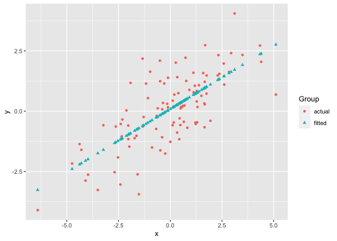
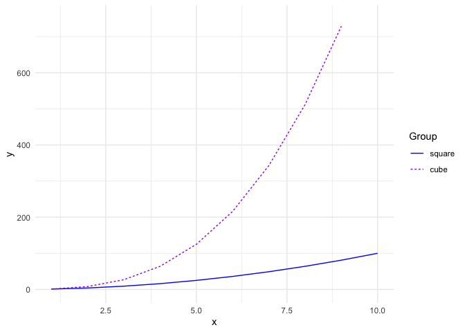
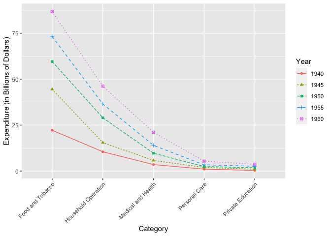
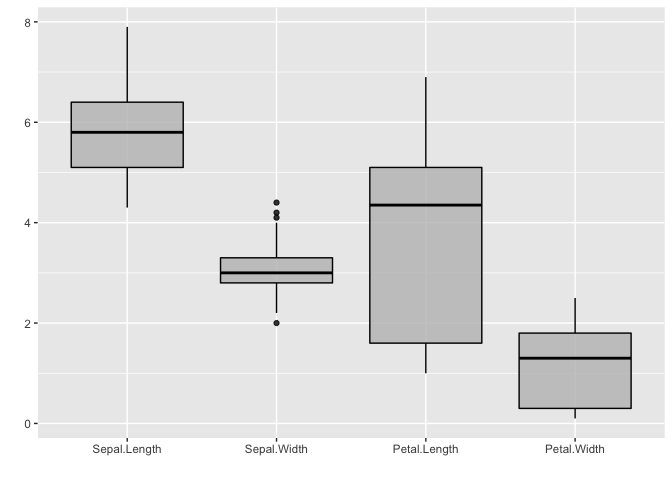
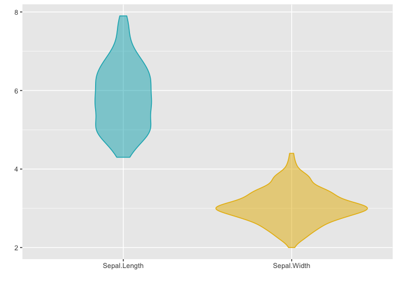
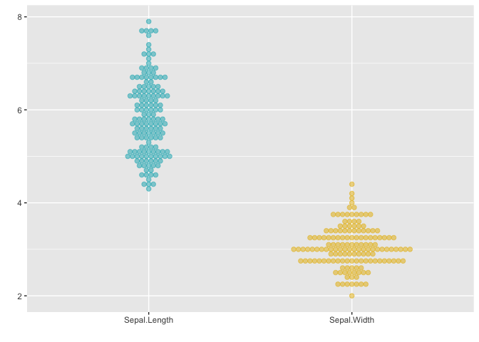
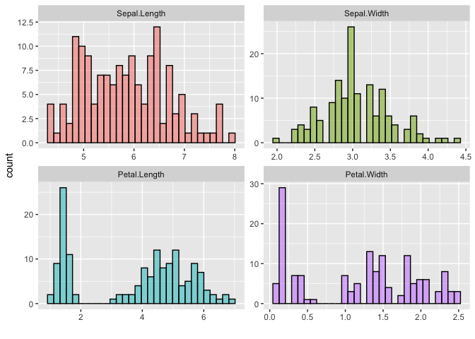
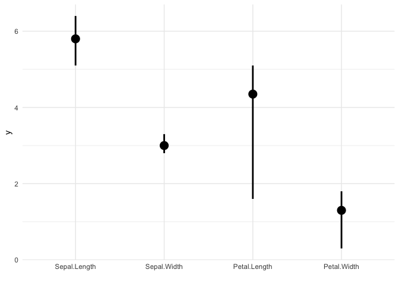

ggmatplot is a quick and easy way of plotting the columns of two matrices or data frames against each other using ggplot2.
Overview
ggplot2 requires wide format data to be wrangled into long format for plotting, which can be quite cumbersome when creating simple plots. Therefore, the motivation for ggmatplot is to provide a solution that allows ggplot2 to handle wide format data. Although ggmatplot doesn’t provide the same flexibility as ggplot2, it can be used as a workaround for having to wrangle wide format data into long format and creating simple plots using ggplot2.
ggmatplot is built upon ggplot2, and its functionality is inspired by matplot. Therefore, ggmatplot can be considered as a ggplot version of matplot.
Similar to matplot, ggmatplot plots a vector against the columns of a matrix, or the columns of two matrices against each other, or a vector/matrix on its own. However, unlike matplot, ggmatplot returns a ggplot object. Therefore, ggplot add ons such as scales, faceting specifications, coordinate systems and themes can also be added on to the resultant ggplot object.
Installation
The latest version can be installed from CRAN:
install.packages("ggmatplot")Or you can install the development version from GitHub:
# install.packages("remotes")
remotes::install_github("xuan-liang/ggmatplot")Examples
The first example plots a vector against each column of matrix using the default plot_type = "point" of ggmatplot(). We consider a simple case that we have a covariate vector x and a matrix z with the response y and the fitted value fit.y as the two columns.
# vector x
x <- c(rnorm(100, sd = 2))
# matrix z
y <- x * 0.5 + rnorm(100, sd = 1)
fit.y <- fitted(lm(y ~ x))
z <- cbind(
actual = y,
fitted = fit.y
)
ggmatplot(x, z)
If two matrices with equal number of columns are used, the corresponding columns of the matrices will be plotted against each other. i.e. column 1 of matrix x will be plotted against column 1 of matrix y, column 2 of matrix x will be plotted against column 2 of matrix y, etc.
The next example uses the iris dataset, with matrices x and y as shown below. The Sepal.Length is plotted against Sepal.Width and the Petal.Length is plotted against Petal.Width. Therefore the groups ‘Column 1’ and ‘Column 2’ can be interpreted as ‘Sepal’ and ‘Petal’ respectively. To make the plot more meaningful, we can further add the legend label and axis names by legend_label, xlab and ylab.
x <- (iris[, c(1, 3)])
head(x, 5)
#> Sepal.Length Petal.Length
#> 1 5.1 1.4
#> 2 4.9 1.4
#> 3 4.7 1.3
#> 4 4.6 1.5
#> 5 5.0 1.4
y <- (iris[, c(2, 4)])
head(y, 5)
#> Sepal.Width Petal.Width
#> 1 3.5 0.2
#> 2 3.0 0.2
#> 3 3.2 0.2
#> 4 3.1 0.2
#> 5 3.6 0.2
ggmatplot(x, y)
The next example creates a line plot of vector x against the columns of matrix y by using plot_type = "line". Although the lines would be represented using different colors by default, the color parameter allows custom colors to be assigned to them.
The following plot assigns custom colors to the lines, and the limits of the y axis are updated using the ylim parameter. Further, a ggplot theme is added on to the resultant ggplot object.
# matrix x
x <- 1:10
# matrix y
y <- cbind(
square = x^2,
cube = x^3
)
ggmatplot(x, y,
plot_type = "line",
color = c("blue", "purple"),
ylim = c(0, 750)
) +
theme_minimal()
Next is plot of the US personal expenditure over 5 categories and 5 years, and is a simple example of how wide format data can be used with ggmatplot(). Note how the expenditure categories to be used on the x axis is used as vector x, and the expenditure values is used in wide format as matrix y - with its columns corresponding to the grouping structure.
The plot specifies the plot type as plot_type = "both", which is a combination of ‘point’ and ‘line’ plots. It customized using ggmatplot() parameters and a ggplot theme as well.
USPersonalExpenditure
#> 1940 1945 1950 1955 1960
#> Food and Tobacco 22.200 44.500 59.60 73.2 86.80
#> Household Operation 10.500 15.500 29.00 36.5 46.20
#> Medical and Health 3.530 5.760 9.71 14.0 21.10
#> Personal Care 1.040 1.980 2.45 3.4 5.40
#> Private Education 0.341 0.974 1.80 2.6 3.64
# vector x
x <- rownames(USPersonalExpenditure)
ggmatplot(x, USPersonalExpenditure,
plot_type = "both",
xlab = "Category",
ylab = "Expenditure (in Billions of Dollars)",
legend_title = "Year",
legend_label = c(1940, 1945, 1950, 1955, 1960)
) +
theme(axis.text.x = element_text(angle = 45, hjust = 1))
Density plots only accept a single matrix or data frame and will group the plot based on its columns. The following density plot uses a two column matrix, and groups the plot by the two columns. While the default density estimate is represented in the measurement units of the data, an aesthetic mapping is added on to the ggplot object to scale the density estimate to a maximum of 1.
# matrix x
x <- (iris[, 1:2])
ggmatplot(x, plot_type = "density") +
aes(y = stat(scaled)) +
theme_bw()
Boxplots accept only a single matrix or data frame as well, and uses its columns as individual groups. While ggmatplot plots are filled by default, the fill color can be made transparent by using alpha = 0.
It is also worth noticing that alpha isn’t a parameter defined in ggmatplot(), but can be used. This is because ggmatplot is built upon ggplot2, and each plot_type corresponds to a geom as listed here. Therefore, all valid parameters with the underlying ggplot2 geom can be used with ggmatplot().
# matrix x
x <- (iris[, 1:4])
ggmatplot(x,
plot_type = "boxplot",
alpha = 0, # removing fill values
xlab = "", ylab = ""
)
Violin plots too accepts a single matrix or data frame input, and behaves similar to density plots and boxplots.
This plot updates the colors of the two groups using the color parameter, and it can be seen that the fill of the violin plots has been updated too. This is because updating either the color or fill parameter will automatically update the other, unless they are both defined simultaneously.
# matrix x
x <- (iris[, 1:2])
ggmatplot(x,
plot_type = "violin",
color = c("#00AFBB", "#E7B800"),
xlab = "", ylab = ""
)
Dotplots too accept a single matrix input and plots the distribution of each of its columns.
The next example uses the plot_type = "dotplot" to visualize the distribution of the data, and also customizes the position of the legend using a ggplot theme as well.
# matrix x
x <- (iris[, 1:2])
ggmatplot(x,
plot_type = "dotplot",
color = c("#00AFBB", "#E7B800"),
xlab = "", ylab = ""
) +
theme(legend.position = "bottom")
Similar to density, violin, dotplots, and box plots, histograms too accept a single matrix or data frame input and groups the plot using its columns. The histogram in the following example uses a matrix of 4 columns, and therefore groups the plots based on these 4 columns. The plot is also faceted by group.
The color and fill parameters have been defined simultaneously on this plot. However, only a single color value is defined whereas the number of fill colors correspond to the number of groups. If a single value is defined it will be used over all groups, like the black line color is used across all groups in this example.
# matrix x
x <- (iris[, 1:4])
ggmatplot(x,
plot_type = "histogram",
xlab = "Group",
color = "black",
fill = c("#F8766D", "#7CAE00", "#00BFC4", "#C77CFF")
) +
facet_wrap(~Group, scales = "free")
The next example is of the plot_type = ecdf, and also uses a single matrix input to plot out the empirical cumulative distributions of the columns of the matrix individually.
# matrix x
x <- (iris[, 1:4])
ggmatplot(x,
plot_type = "ecdf",
xlab = "Group",
size = 1
) +
theme_minimal()
Error plots also accept only a single matrix input, and plots out error bars for each column of the matrix. The desc_stat parameter of ggmatplot() can be used to define what the mid point and error bars of the plot should represent.
The next example, plots out an errorplot using the medians and interquartile ranges of each variable.
# matrix x
x <- (iris[, 1:4])
ggmatplot(x,
plot_type = "errorplot",
desc_stat = "median_iqr",
xlab = "Group",
size = 1
) +
theme_minimal()